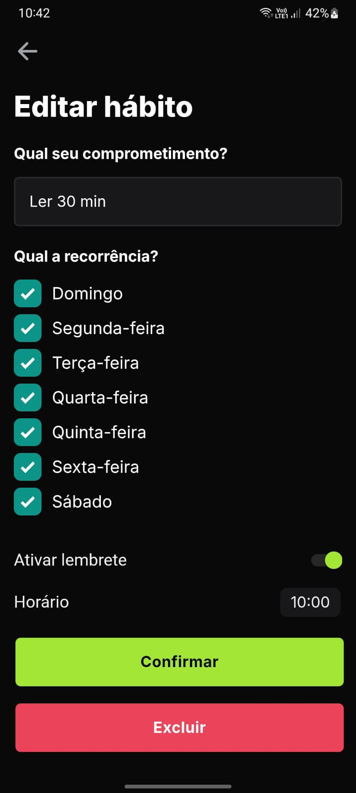
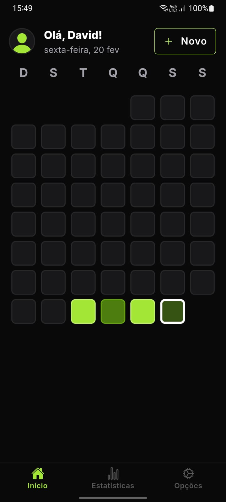
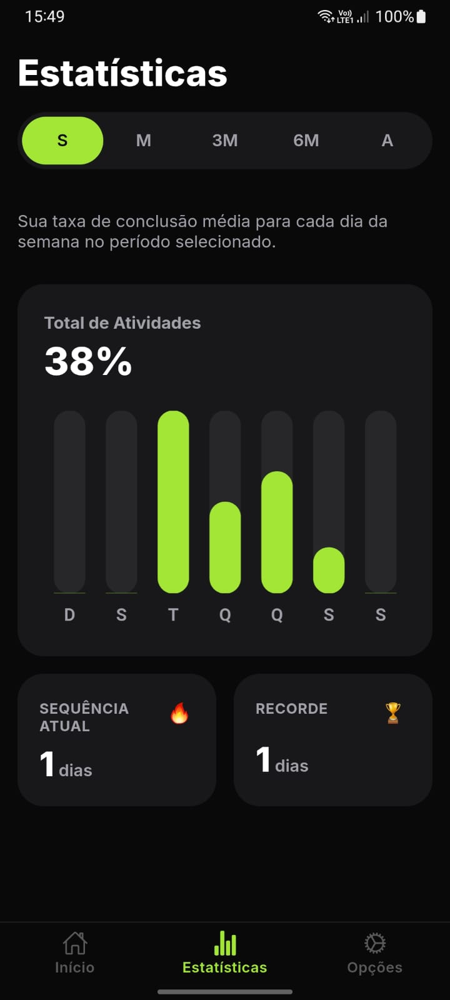

Passo a Passo
Veja como é fácil começar
Da criação da conta ao acompanhamento das suas estatísticas, tudo em poucos toques.
1

Passo 1
Crie sua conta
Informe seu nome, e-mail e senha para criar sua conta em segundos e começar a construir seus hábitos.
2

Passo 2
Crie seu hábito
Defina o compromisso, escolha os dias da semana em que ele se repete e ative lembretes no horário que preferir.
3

Passo 3
Acompanhe no calendário
Na tela inicial, visualize seu histórico de dias concluídos e mantenha sua sequência sempre em dia.
4

Passo 4
Marque como concluído
Toque em cada hábito do dia para marcá-lo como feito e acompanhe a barra de progresso diária em tempo real.
5

Passo 5
Analise suas estatísticas
Veja sua taxa de conclusão por dia da semana, sua sequência atual e seu recorde para se manter motivado.
6

Passo 6
Personalize sua experiência
Edite seu perfil, altere a senha, ative o modo escuro e gerencie sua conta a qualquer momento.